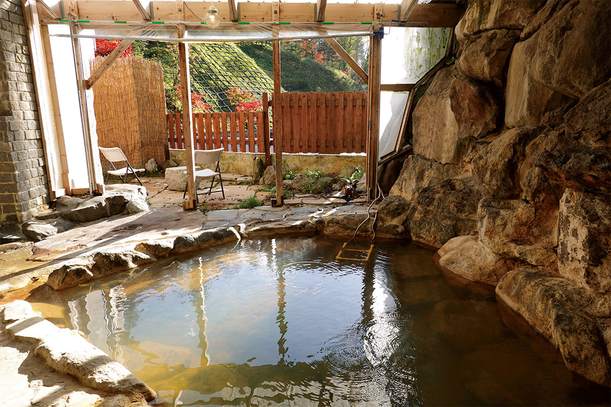
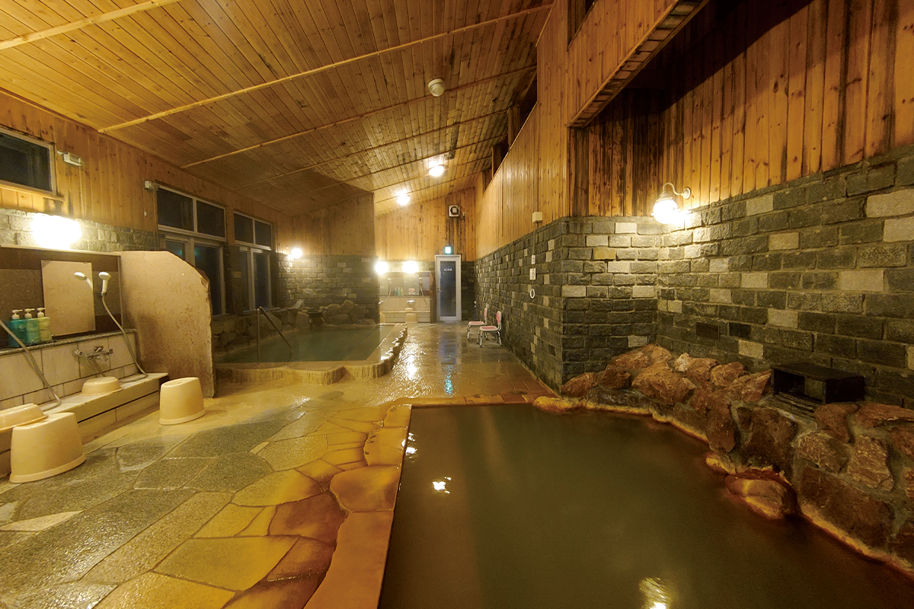
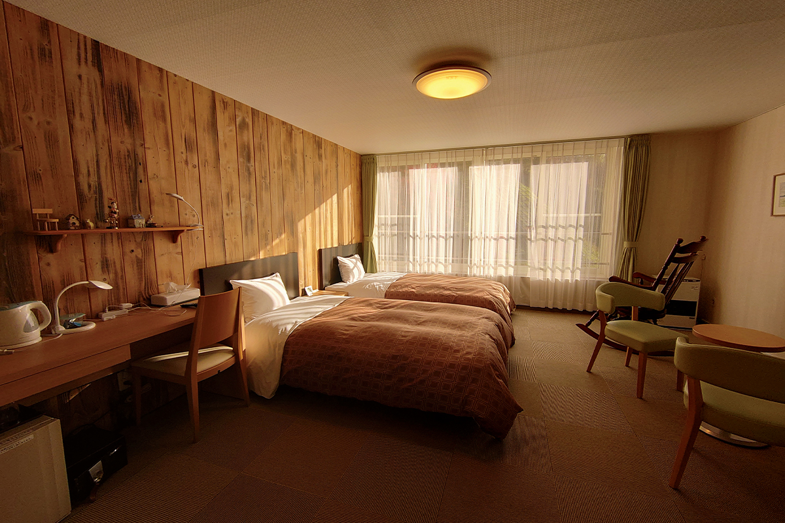
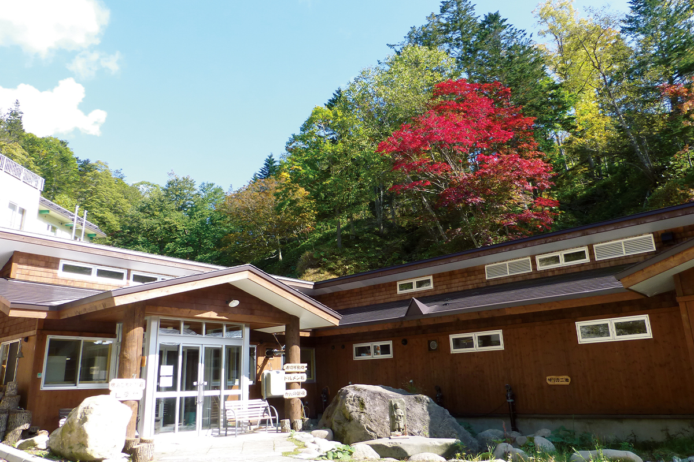

Префектура Хоккайдо · ущелье Сикарибэцу · онсэн
Онсэн «Канно»: одиннадцать купален в лесу ущелья Сикарибэцу

Бывают онсэны, которые успокаивают, а бывают те, что возвращают силы. «Канно» в глубине Хоккайдо из вторых: здесь из земли сами бьют 13 источников, и у каждой купальни своя вода.
Дорога
Онсэн за пределами связи
Онсэн «Канно» стоит в ущелье Сикарибэцу, в глубине национального парка Дайсэцудзан. Как только машина сворачивает на горную дорогу, телефон теряет сеть, и примерно тогда же начинаешь сомневаться, правильно ли едешь. Зато на месте про долгий путь забываешь быстро: для любителя горячих источников это настоящий рай.
По словам исследовательницы онсэнов, такие места нужны, когда хочется не столько расслабиться, сколько зарядиться: горячая и насыщенная минералами вода будит тело после долгого сидения дома.
Источник
Вода, которая шепчет
В гостевом доме «Коморэби-со» есть купальня «Икоро-бокка». На айнском языке это значит «бьющее из земли сокровище», и вода здесь действительно поднимается сама, со дна каменной ванны. Из чуть мутной зеленовато-бурой воды доносится тихое бульканье и потрескивание: это звук источника, который не иссякает.
Вода натрий-хлоридно-гидрокарбонатная, гладкая на ощупь, и кожа после неё заметно блестит. Минералов в ней много, 3601 мг на килограмм, так что за тихим шёпотом скрывается сильный источник, который прогревает до самых костей. На выходе вода горячая, 56 градусов. Чтобы не разбавлять её, хозяева опустили в каменную ванну самодельный теплообменник: по свёрнутой спиралью трубе течёт холодная горная вода и остужает источник. В ванну попадает только свежая вода из-под земли.

Купальни
Онсэн-триатлон
По всей территории из земли бьют 13 источников, и они питают 11 купален. Цвет, запах и ощущение от воды везде свои. Если посмотреть на анализы, развешанные в ряд, состав кажется похожим, но в воде разница чувствуется сразу. Купальни есть в общих банях внутри и под открытым небом, ещё одна в самом доме, а одну открытую купальню можно взять только для себя. Хочется за одну ночь обойти все, и переходы из ванны в ванну превращаются в настоящий онсэн-триатлон.

Кормят в ресторане японской кухней, утром и вечером. Обеда нет, но тем, кто остаётся на несколько ночей, его можно обсудить с хозяевами. Одиночных гостей тоже принимают.

Онсэн «Канно»
- Адрес
- префектура Хоккайдо, уезд Като, Сикаои, Кита-Уримаку, государственный лес Сикарибэцу, 145
- Телефон
- +81 50-5319-4068
- Часы работы
- дневное купание 12:00–17:00 (последний вход в 16:30)
- Выходные
- вторник и среда (только с конца ноября до конца апреля), бывают и другие выходные дни
- Цены / Вход
- ночь с ужином и завтраком от 10 000 иен (с налогом и сервисным сбором, цена 2022 года)
- Заезд / выезд
- 15:00 / 10:00
- Как добраться
- на машине около 1 ч 10 мин от развязки Токати-Симидзу скоростной дороги Дото или от станции Обихиро